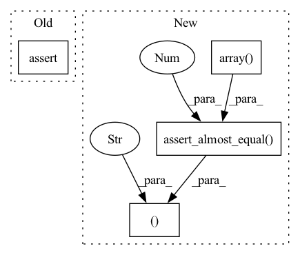

Pattern ID :390
Before Change
assert type(image_size) is list, "Image size must be a list"
assert image_size == [439, 640], "Incorrect image size"
assert type(output_scale) is np.ndarray, "Output scale must be a numpy array"
assert output_scale == pytest.approx(np.array([1.95, 2.84]), 0.01), "Incorrect scale"
def test_model_instantiation(self, posenet_predictor):
self.posenet_model = posenet_predictor._create_posenet_model()After Change
assert type(image_size) is list, "Image size must be a list"
assert image_size == [439, 640], "Incorrect image size"
assert type(output_scale) is np.ndarray, "Output scale must be a numpy array"
npt.assert_almost_equal( output_scale, np.array( [1.95, 2.84]) ,
2 ), "Incorrect scale"
def test_model_instantiation(self, posenet_predictor):
self.posenet_model = posenet_predictor._create_posenet_model()
assert self.posenet_model is not None, "Model is not instantiated"In pattern: SUPERPATTERN
Frequency: 5
Non-data size: 4
Instances Fragment ID: 2284208
Project Name: aimakerspace/peekingduck
Commit Name: ff36a76cad7e4fa9f1af3f71acb5de2d33487295
Time: 2021-05-24
Author: pangyyyyyy96@gmail.com
File Name: tests/pipeline/nodes/model/posenetv1/test_predictor.py
M Class Name: TestPredictor
N Class Name: TestPredictor
M Method Name: test_create_image_from_frame(2)
N Method Name: test_create_image_from_frame(2)
M Parent Class:
N Parent Class:
M File Name: tests/pipeline/nodes/model/posenetv1/test_predictor.py
N File Name: tests/pipeline/nodes/model/posenetv1/test_predictor.py
M Start Line: 78
M End Line: 78
N Start Line: 78
N End Line: 79
Before Change
displacements=displacements_fwd)
assert score == pytest.approx(0.4393, 0.01), \
"Score did not meet expected value"
assert coords == pytest.approx(np.array([77.11, 71.62]), 0.01), \
"Coordinates of incorrect values"
After Change
displacements=displacements_fwd)
npt.assert_almost_equal(score, 0.4393,
4), "Score did not meet expected value"
npt.assert_almost_equal( coords, np.array( [77.11, 71.62]) ,
2 ), "Coordinates of incorrect values"
Fragment ID: 2284199
Project Name: aimakerspace/peekingduck
Commit Name: ff36a76cad7e4fa9f1af3f71acb5de2d33487295
Time: 2021-05-24
Author: pangyyyyyy96@gmail.com
File Name: tests/pipeline/nodes/model/posenetv1/test_decode.py
M Class Name: TestDecode
N Class Name: TestDecode
M Method Name: test_traverse_to_target_keypoint(6)
N Method Name: test_traverse_to_target_keypoint(6)
M Parent Class:
N Parent Class:
M File Name: tests/pipeline/nodes/model/posenetv1/test_decode.py
N File Name: tests/pipeline/nodes/model/posenetv1/test_decode.py
M Start Line: 72
M End Line: 86
N Start Line: 73
N End Line: 89
Before Change
def test_clip_to_indices(self, source_keypoint):
source_keypoint_indices = _clip_to_indices(
keypoints=source_keypoint, output_stride=16, width=14, height=14)
assert source_keypoint_indices == pytest.approx(np.array([5, 4])), \
"Unexpected output from clipping to indices"
def test_traverse_to_target_keypoint(self, source_keypoint, scores, offsets,After Change
def test_clip_to_indices(self, source_keypoint):
source_keypoint_indices = _clip_to_indices(
keypoints=source_keypoint, output_stride=16, width=14, height=14)
npt.assert_almost_equal( source_keypoint_indices, np.array( [5, 4]) ,
4 ), "Unexpected output from clipping to indices"
def test_traverse_to_target_keypoint(self, source_keypoint, scores, offsets,
displacements_bwd, displacements_fwd):
score, coords = \ Fragment ID: 2284202
Project Name: aimakerspace/peekingduck
Commit Name: ff36a76cad7e4fa9f1af3f71acb5de2d33487295
Time: 2021-05-24
Author: pangyyyyyy96@gmail.com
File Name: tests/pipeline/nodes/model/posenetv1/test_decode.py
M Class Name: TestDecode
N Class Name: TestDecode
M Method Name: test_clip_to_indices(2)
N Method Name: test_clip_to_indices(2)
M Parent Class:
N Parent Class:
M File Name: tests/pipeline/nodes/model/posenetv1/test_decode.py
N File Name: tests/pipeline/nodes/model/posenetv1/test_decode.py
M Start Line: 57
M End Line: 58
N Start Line: 56
N End Line: 59
Before Change
image_processed, scale = rescale_image(frame, (500, 333), 1.5, 16, "resnet")
assert image_processed.shape == (
1, 497, 737, 3), "Rescaled image is of incorrect shape"
assert scale == pytest.approx(np.array([0.8684, 0.8551]), 0.01), "Incorrect scale"
def test_preprocess_image_resnet(self, frame, image_resnet):
image_processed, scale = rescale_image(frame, (225, 225), 1, 16, "resnet")After Change
image_processed, scale = rescale_image(frame, (500, 333), 1.5, 16, "resnet")
assert image_processed.shape == (
1, 497, 737, 3), "Rescaled image is of incorrect shape"
npt.assert_almost_equal( scale, np.array( [0.8684, 0.8551]) ,
4 ), "Incorrect scale"
def test_preprocess_image_resnet(self, frame, image_resnet):
image_processed, scale = rescale_image(frame, (225, 225), 1, 16, "resnet")
assert image_processed.shape == ( Fragment ID: 2284201
Project Name: aisingapore/peekingduck
Commit Name: ff36a76cad7e4fa9f1af3f71acb5de2d33487295
Time: 2021-05-24
Author: pangyyyyyy96@gmail.com
File Name: tests/pipeline/nodes/model/posenetv1/test_preprocessing.py
M Class Name: TestPreprocessing
N Class Name: TestPreprocessing
M Method Name: test_resize_image(2)
N Method Name: test_resize_image(2)
M Parent Class:
N Parent Class:
M File Name: tests/pipeline/nodes/model/posenetv1/test_preprocessing.py
N File Name: tests/pipeline/nodes/model/posenetv1/test_preprocessing.py
M Start Line: 55
M End Line: 55
N Start Line: 56
N End Line: 57